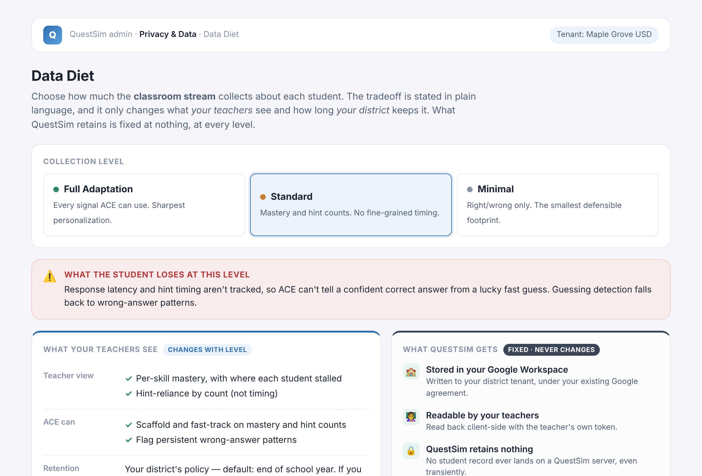
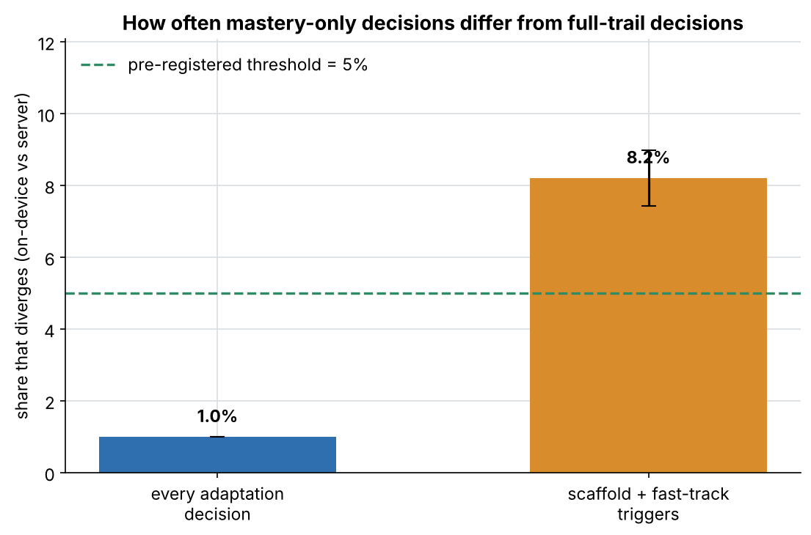

Three prototypes for one wicked problem
QuestSim's adaptive engine (ACE) gets better the more fine-grained the data it sees. COPPA, FERPA, and the districts that enforce them push the other way. Solving for personalization makes the privacy problem harder; solving for privacy degrades personalization — so there's no optimum, only a position each district sets.
Classroom stream
What this child did today. Written into the district's own Google Workspace, owned by the district, never stored by QuestSim.
Engineering stream
How children in general behave. Synthetic or de-identified aggregates only — never an individual record.

Data Diet Toggle
A clickable admin-console mock: the district picks how much the classroom stream collects — Full, Standard, or Minimal — with tradeoffs in plain language and QuestSim's share fixed at nothing.
Clickable HTML mock
Mastery-Only Export
A replay harness proving ACE can adapt on-device and export only a mastery vector. ~99% of adaptation decisions survive; it names the two signals that carry the residual.
Runnable Python harness
Synthetic Student Tuning
A simulation harness that develops and calibrates ACE on ~200 synthetic middle schoolers, so real student data is needed only for low-volume aggregate validation — never for model development.
Runnable Python harnessHow they interlock
- Prototype 1 makes the narrowing a product feature a privacy officer can sign against without calling counsel.
- Prototype 2 shows ~99% of ACE's decisions survive moving on-device — and the residual falls on exactly the two signals (response latency, hint timing) that Prototype 1's Standard and Minimal levels drop.
- Prototype 3 answers if QuestSim never gets student data, how does the product get better? — and can supply the synthetic logged sessions Prototype 2 replays.